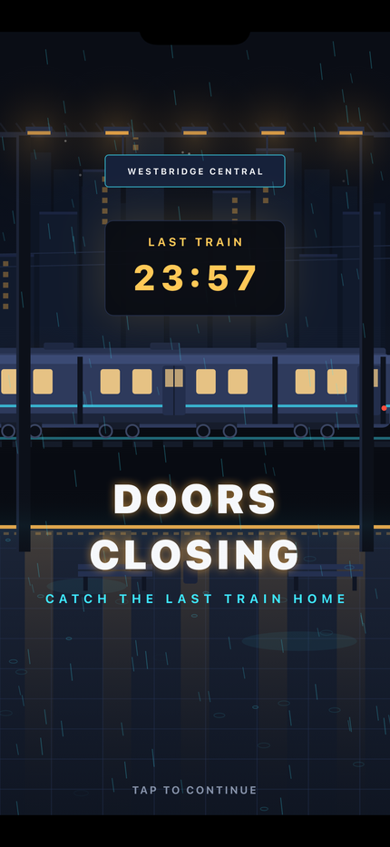
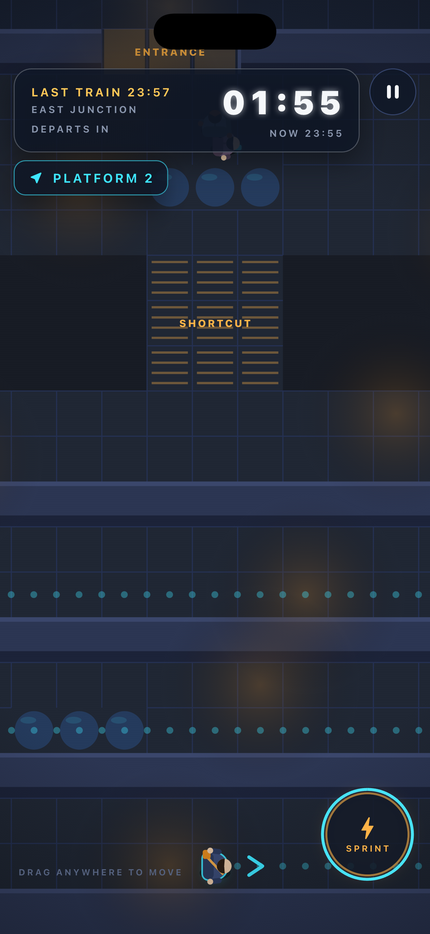
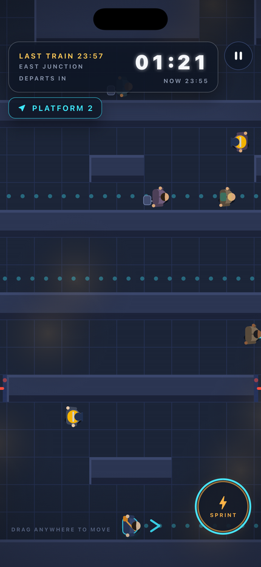
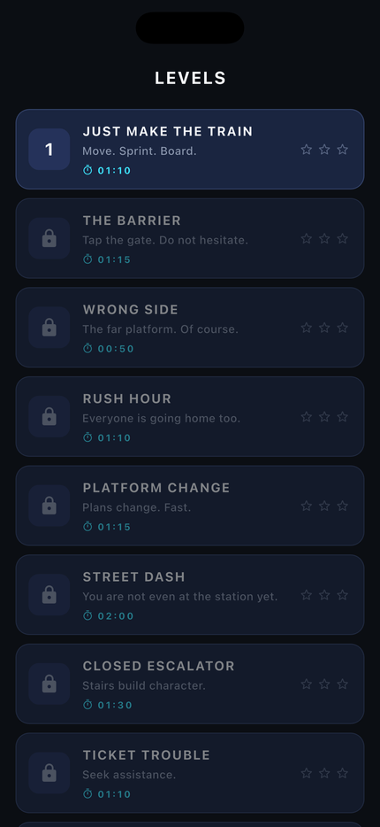

Doors ClosingCatch the last train home
Doors closing. Can you make it?
Sprint through a rain-soaked station to catch the last train home before the doors shut. A run takes two minutes. You will want another one immediately.
It is 23:51 in Westbridge City. The final service leaves in minutes, the concourse is half lit, and everything that can go wrong, will.
Expect problems
Platform changes. Escalators closed. Lifts out of service. Your ticket rejected at the gate. A tourist who needs directions right now. Twenty-five disruptions fire at different moments every run, and your route redraws itself while the clock keeps counting down.
Twenty levels across Westbridge Central
Street dashes through traffic and rain. Island concourses. Six-platform mazes. Crowd surges. Wet floors that steal your footing. Then a finale that throws all of it at you at once.
No nonsense
No account. No sign-up. No tracking. No adverts. No internet connection required, ever. Your progress stays on your device.



